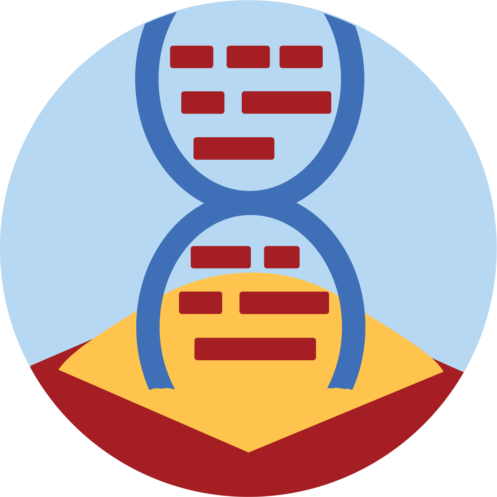
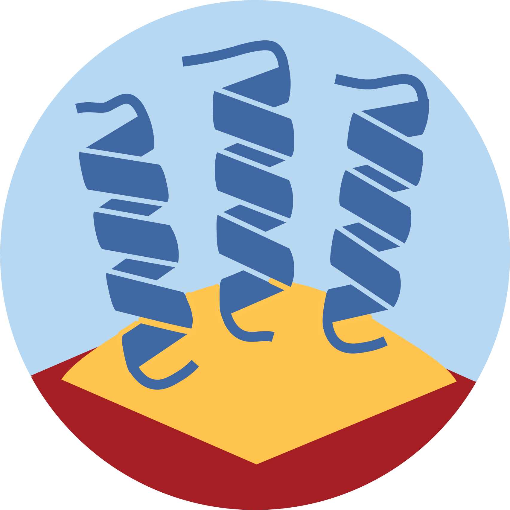

Training modules
Sandbox resources have been organized as training modules focused on key topics in health data science. We are constantly adding additional resources and have plans to create additional modules on medical imaging and wearable device data. Feel free to adapt these resources for your own purposes (with credit to the National Health Data Science Sandbox project and other projects they acknowledge in the specific materials).
You can access our training modules through:
- In-person workshops and courses at host universities (check News for announcements)
- Course/workshop repositories on our GitHub page - some tool assembly may be required!
- Independently accessible Sandbox apps on UCloud, the academic (interactive) HPC at University of Southern Denmark
- Independently accessible Sandbox apps on GenomeDK, the bioinformatics high-throughput HPC at University of Aarhus
- Virtual machines deployed on the Course Platform at Computerome, the academic HPC at the Technical University of Denmark (Sandbox rollout still under development!) tutorials and guides and popular tools for analysis and visualization. Email us with any questions, comments or suggestions for new workshops!
Data Carpentry and management
Computing skills are an important foundation for health data science (and using the above training modules), but formal training is often lacking as biomedical researchers navigate increasingly difficult computational tasks in their projects. These skills range from programming to the use of high-performance computers (HPC) to proper research data management.
- RDM for biodata (workshop on how to handle NGS data following simple guidelines to increase the FAIRability of your data)
- HPC launch (workshop in development)
- HPC pipes (workshop in development)
- HeaDS DataLab workshop materials (workshops for programming and good practices developed by the Center for Health Data Science at the University of Copenhagen, which are sometimes co-taught by Sandbox staff! Includes R, python, bash, and git!)
Genomics

Genomics is the study of genomes, the complete set of an organism’s DNA. Genomics research now encompasses functional and structural studies, epigenomics, and metagenomics, and genomic medicine is under active implementation and extension in the health sector.
Use the Genomics Sandbox App on UCloud to explore the resources below:
- Introduction to Next Generation Sequencing data (last update: June 2023)
- Introduction to Population Genomics (implementation of a course by Prof. Kasper Munch of Aarhus University) (last update: March 2023)
- Introduction to GWAS (last update: March 2023)
Transcriptomics

Transcriptomics is the study of transcriptomes, which investigates RNA transcripts within a cell or tissue to determine what genes are being expressed and in what proportion. These RNA transcripts include mRNAs, tRNA, rRNA, and other non-coding RNA present in a cell.
Use the Transcriptomics Sandbox App on UCloud to explore these resources:
- Bulk RNAseq (last update: June 2023)
- Single-Cell RNAseq (last update: May 2023)
- Cirrocumulus (a popular tool for visualizing different types of RNA-seq data and downstream analysis)
- RNAseq in RStudio (RStudio session with pre-installed RNAseq analysis packages for exploring with your own uploaded data)
Proteomics

Proteomics is the study of proteins that are produced by an organism. Proteomics allows us to analyze protein composition and structure, which have great importance in determining their function.
Use the Proteomics Sandbox App on UCloud to explore pre-installed tools for proteomics analysis and other resources:
- Proteomics Sandbox Documentation (last update: May 2023)
- Introduction to Clinical Proteomics (course under development)
We also offer a tutorial on UCloud’s ColabFold app, a tool that allows predictions with AlphaFold2 or RoseTTAFold.
- ColabFold Intro (last update: October 2022)
Electronic Health Records
Electronic health records (EHRs) are digital records kept in the public health sector that record the medical histories of individuals, and access is normally highly restricted to preserve patient privacy. This data is sometimes also shared (partly or in full) in secondary patient registries that support research on a specific disease or condition (such as breast cancer or cystic fibrosis). These datasets are extraordinarily valuable in the development of predictive models used in precision medicine.
The chronic lymphocytic leukemia synthetic dataset listed below is generated solely from public data. It is of low utility, so we don’t recommend its use beyond the course it was designed for (with much explanation for the students on its construction and caveats). Please see Synthetic Data for more information.
- Chronic Lymphocytic Leukemia synthetic dataset created for use in “Fra realworld data til personlig medicin”, a course from the University of Copenhagen’s MS in Personlig Medicin (last update: January 2023)
- Intro to EHR analysis (workshop under development)